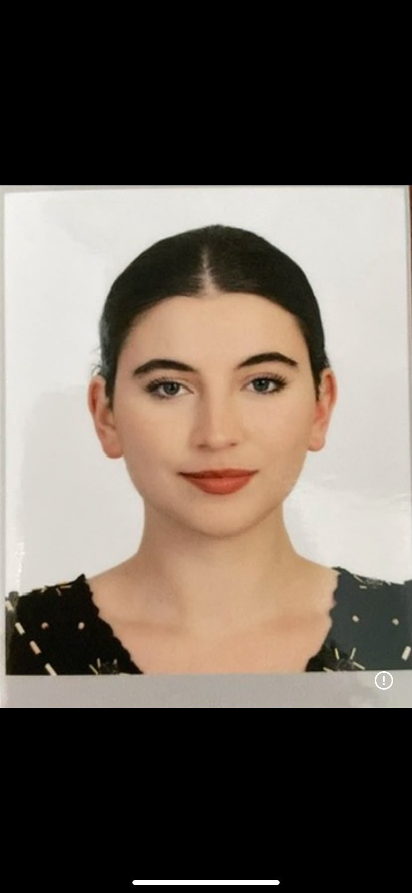

Pelin Ferihan Savtekin
ULUSLARARASI İLİŞKİLER | DİPLOMASİ & KOORDİNASYON
COP31 Operasyon Ekibi
Ege Üniversitesi Uluslararası İlişkiler öğrencisi. İspanya'da 10 aylık Erasmus eğitimini tamamladı. Kamu yönetimi, kriz çözümü, çok uluslu etkinlik koordinasyonu ve Model UN liderlik tecrübesine sahip.
Staj / Yönetim
OperasyonT.C. İzmir Bayraklı Kaymakamlığı bünyesinde kurumlar arası bilgi akışı, devlet teşkilatı pratikleri ve vatandaş iletişimi koordinasyonu.
Model UN Genel Sekreterliği & Organizasyon
Liderlik & Kriz Yönetimi500+ katılımcılı konferans liderliği ve bütçe yönetimi; İZFAŞ Mermer Fuarı yabancı katılımcı koordinasyonu ve lojistik desteği.